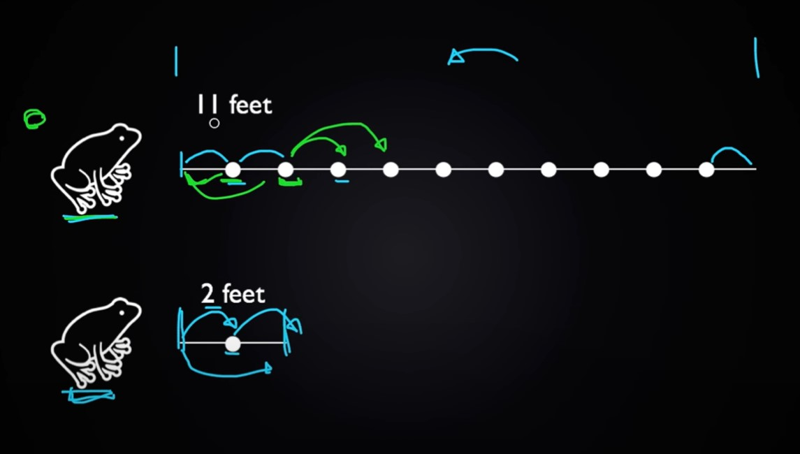

11/07/2020
Recently started small video course by CS Dojo on the topic of Data
Structures & Algorithms. There was a funny task to write a...

... function to count a quantity of frog's ways to reach an opposite
riverside if there are stones across the river and frog can jump
only further and only by one or two stone per jump. It was quite
easy to solve after previous task to count a fibonacchi numbers.
Anyway, here i'd like to post a solution (hope it's correct :).
const frogWays = (distance) => {
if
(!Number.isInteger(distance)) return;
distance < 3 ? distance : frogWays(distance - 1) + (distance - 2);
};